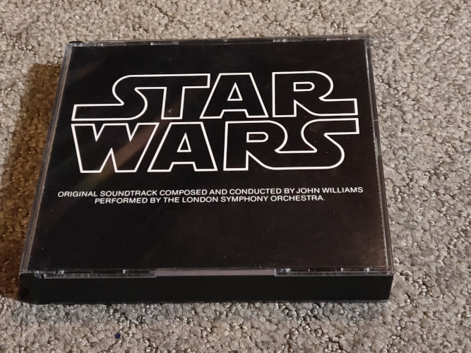
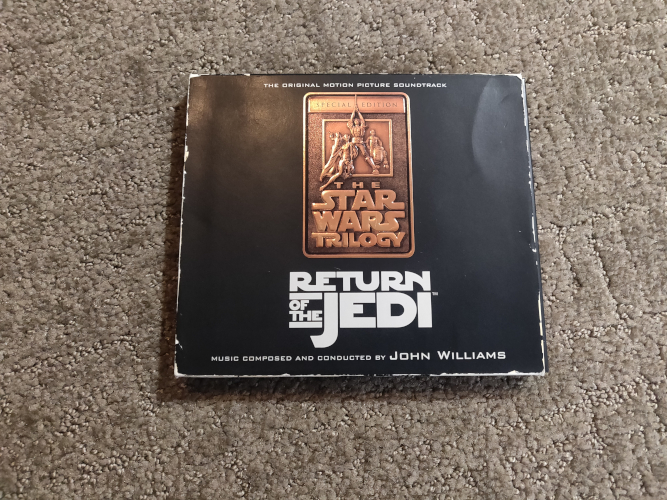
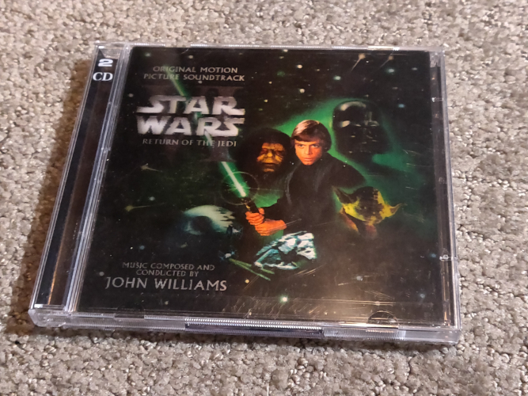
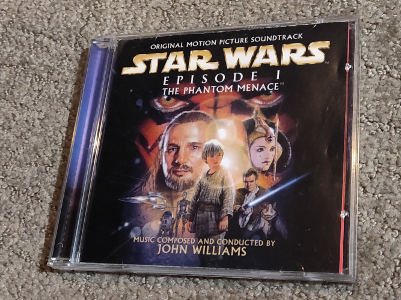
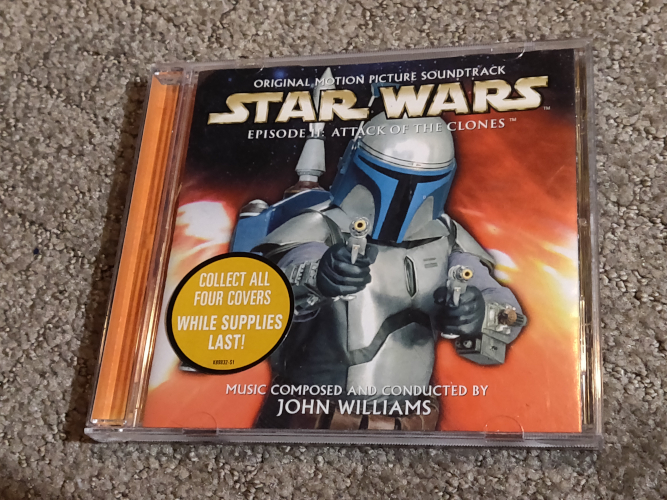
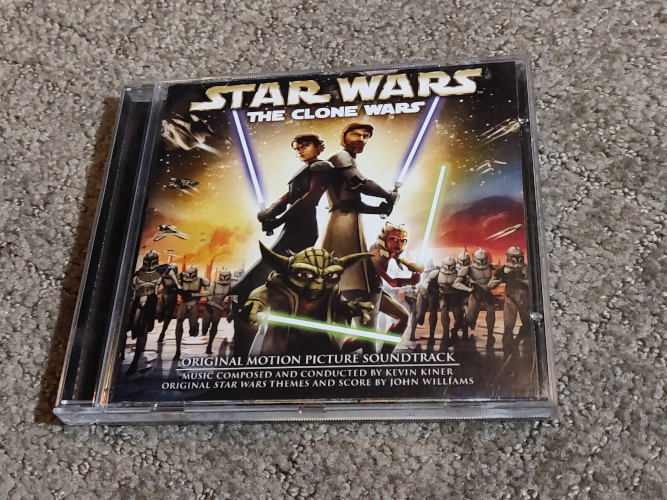
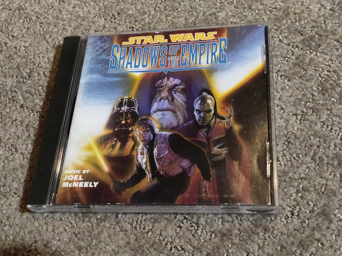
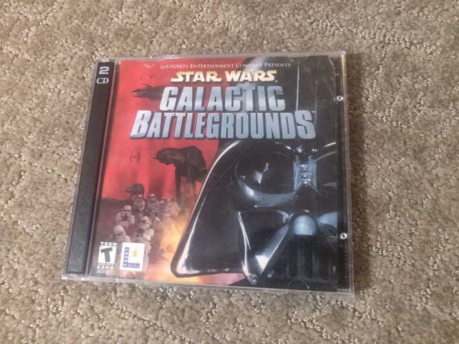
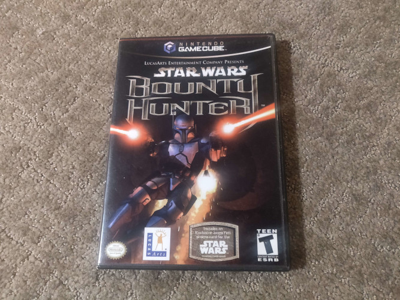
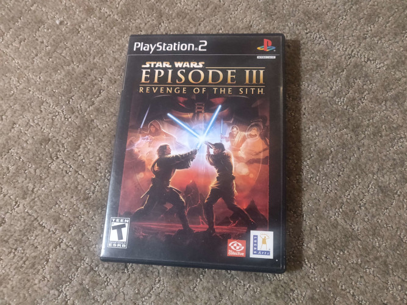

Gallery
Here I have some photo galleries of various items in my collection. This isn't everything that I own, and I have a lot more stuff that I own digitally, particularly when it comes to the videogames. But it should give you an idea of what some of these items look like.
The purpose of these galleries are to hopefully provide some inspiration for your own collection. None of these items are particularly rare or expensive. I picked up several of them used for cheap at garage sales.
If you do want to start your own collection, for the Original Trilogy I'd definitely recommend getting the 1993 Anthology box set, the 1997 (or 2004) expansions, and the 2018 Remastered sets. The OST albums are purely collector's items. You could technically get a CD copy of the ROTJ OST if you really wanted to, but all the same music is available on the 1993/2018 sets in similar quality.
As for the prequels, unless you care about alternate takes only the original OST albums are worth bothering with, the 2018 Remastered sets don't offer anything of value. I would definitely recommend picking up some videogames. The Old Republic is free to play and can be downloaded digitally. Most PC games have been rereleased on Steam and are available cheaply. The biggest games to collect physically are those that were console exclusive, such as two of the ones I showcase below.
Star Wars Albums Collection
This collection includes photos of my Star Wars music albums. I tried to focus here on variety in my selections, I show off classic trilogy OSTs, the 1997 expansions, the 2004 reissues, the prequel trilogy OSTs, and some other miscellaneous albums like Shadows of the Empire and The Clone Wars.
|

ANH OST |

ESB SE |

ROTJ 1997 SE |
|

ROTJ 2004 SE |

TPM OST |

AOTC OST |

ROTS OST |

TCW OST |

SOTE album |
Video Games with Unreleased Music Gallery
Here I present a collection of a few videogames I physically own that have unreleased prequel music in them. This includes games for the PC, GameCube, and Playstation 2 platforms. Galactic Battlegrounds has unreleased music from TPM, and Bounty Hunter and the ROTS game have unreleased music from TPM and AOTC. Ironically, the ROTS game has zero ROTS music in it because it came out before the movie.
|

Galactic Battlegrounds PC |

Bounty Hunter GC |

Revenge of the Sith PS2 |
© 2024 by enderdrag64-design. All rights reserved.